팀명: Team 05
과목명: 데이터 마이닝
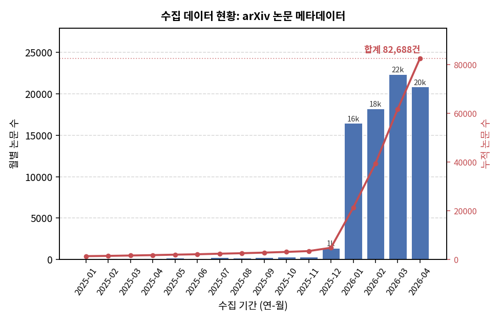
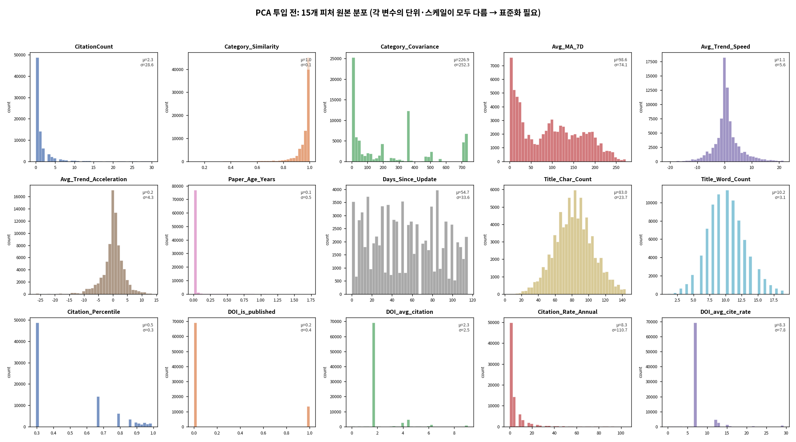
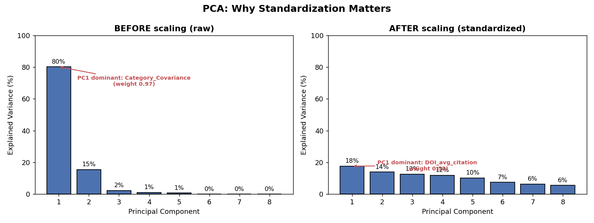
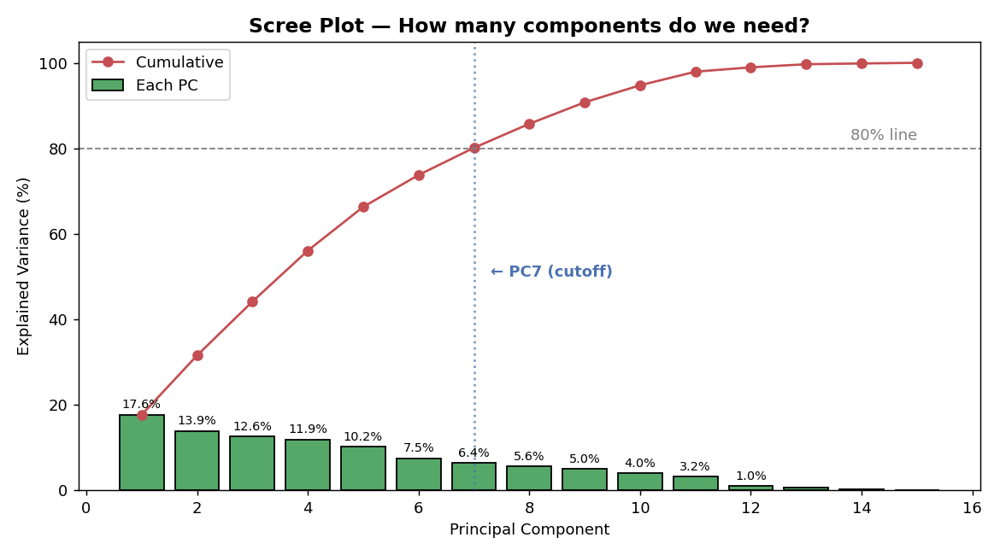
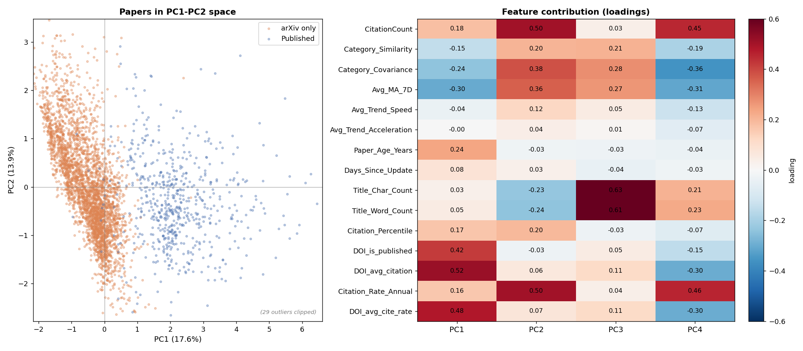
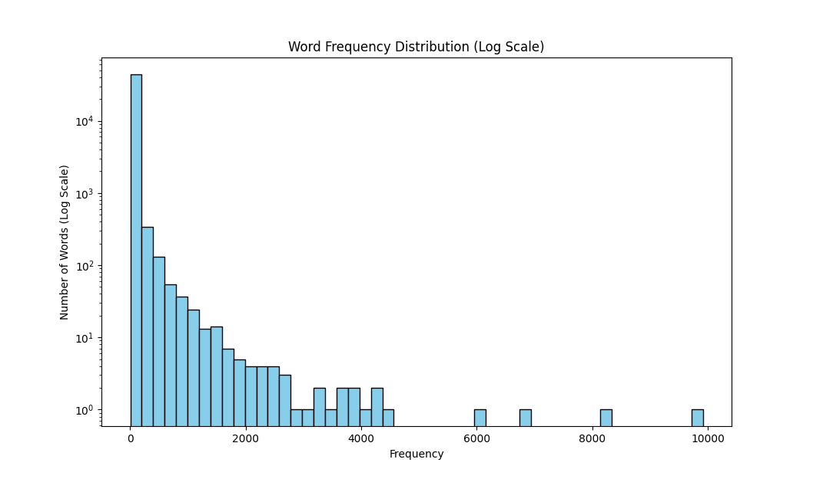
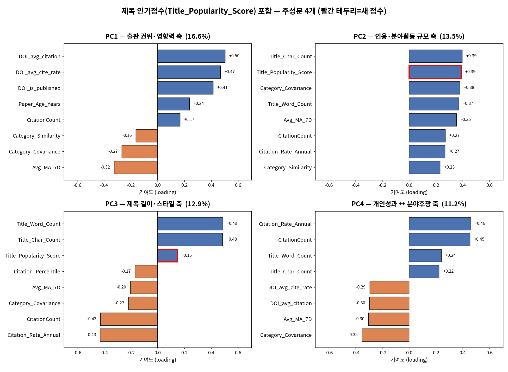
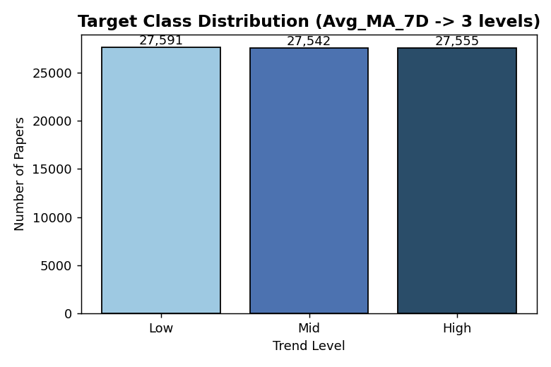
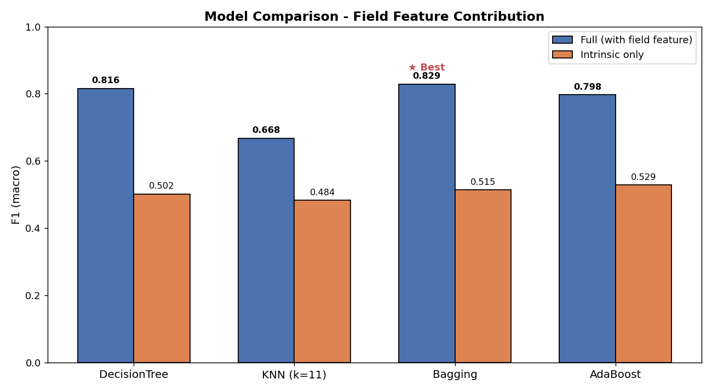
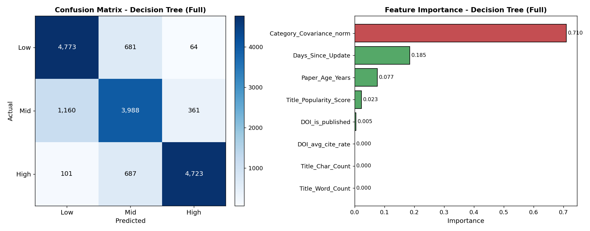
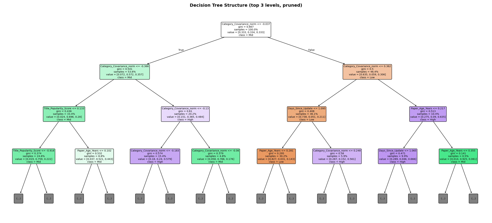
랜덤 분할은 미래의 데이터가 과거를 예측하는 데 쓰이는 미래 참조(Data Leakage) 문제가 발생할 수 있습니다. 이를 검증하기 위해 시간 기반 분할(과거 데이터로 미래 예측)을 수행했습니다.
새로운 미래의 달(4월) 데이터에 대해서도 78%의 F1 점수를 기록하며, 본 모델이 실제 프로덕션 환경에서도 안정적으로 트렌드를 예측할 수 있음을 입증했습니다.
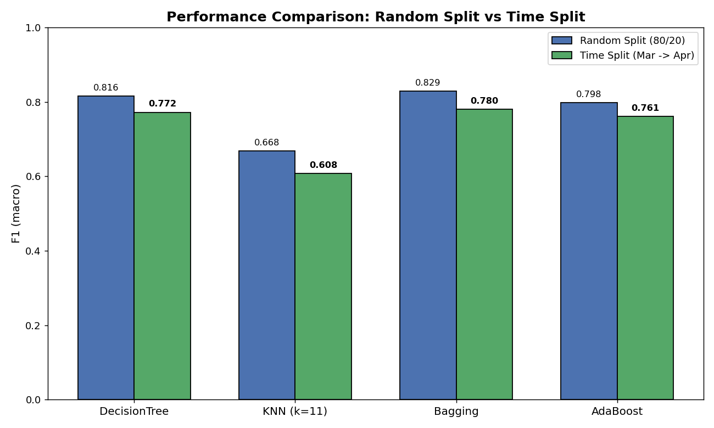
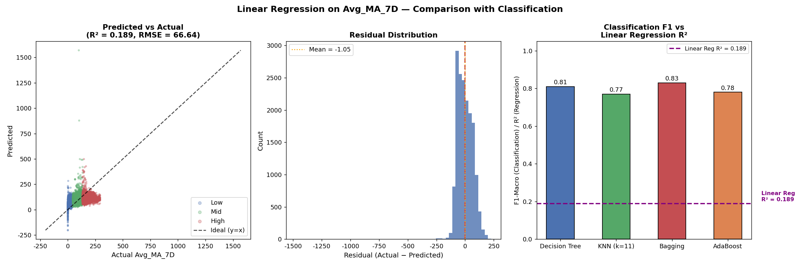
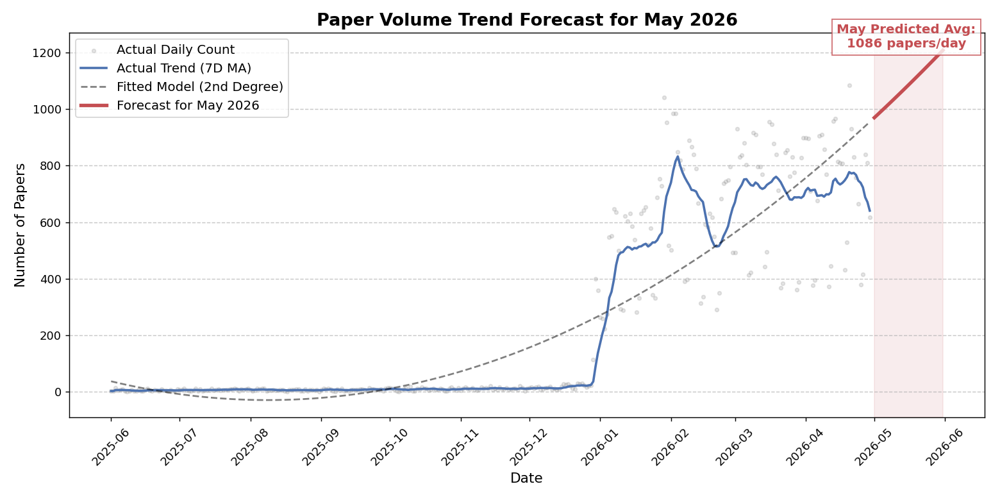
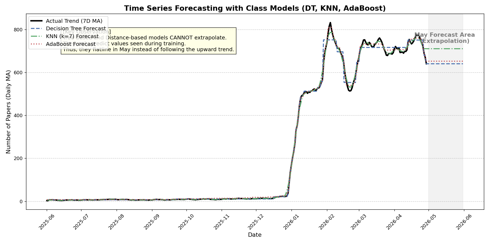